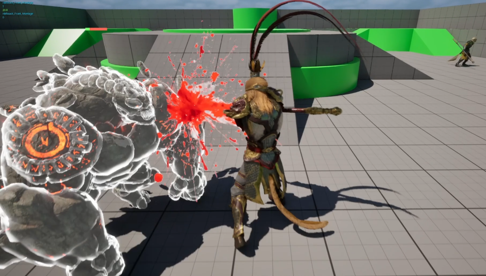
UE5 Combat System
Game Development — Individual Project
Overview
This project follows a tutorial on building a combat system in Unreal Engine 5. My approach was to recreate the system little by little based on my understanding of the tutorial, rather than following the video verbatim.
The main features I implemented include:
1. An attack system (chain attacks, jump attacks, and attacks while running)
2. A basic hit system (regular/advanced hitboxes, directional hits, health bars, and ragdoll on death)
3. Additional features to improve the overall feel of the combat system, such as hit stop, hit shake, camera shake, hit flash, hit VFX, and optimized VFX using a stencil render pass.
Tech Stack
- Blueprints
- Unreal Engine
- Niagara System

Project Details
I will keep updating the implementation details of the project in the future. Below are some of the GIFs of the features I implemented. I will break them down into Part 1 and Part 2.
Part 1:
Chain Attacks
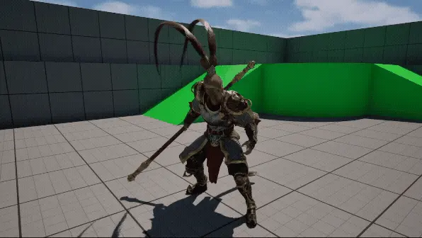
- All the attack logic happens in an actor component called AC_CombatSystem.
- I created a Default Slot in the Animation Blueprint (ABP), which allows attack montages to play on top of the default locomotion pose.
- I then created Animation Montages from the attack sequences.
- The attack system starts with a simple flow from TriggerAttack to PlayMontage.
- For chain attacks, I set up an array of Animation Montages in the System Parameters, then used an Index to loop through the array and play each attack in sequence.
- To control the combo timing, I added a CombatInputWindow Notify State and used it with the CanAttack boolean. This makes sure the next attack can only be triggered within a specific time window.
Attack While Running
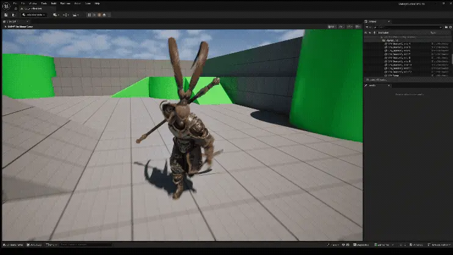
- In ABP_CombatModule, I used Layered Blend per Bone to combine the cached locomotion and combat poses. This allows the lower body to keep running while the upper body plays the attack animation triggered through the Default Slot. I set up the pelvis and thigh bones, along with their blend depths, using Branch Filters.
- For attack while jumping, I needed to filter the pose using a boolean. If the character is accelerating but not in the air, pause the blend at a specific point in the animation (because there’s a jumping part in the original animation although the character is still on the ground). This feature is demonstrated in the "Advanced Hitbox" gif in the following section.
Jump Attack
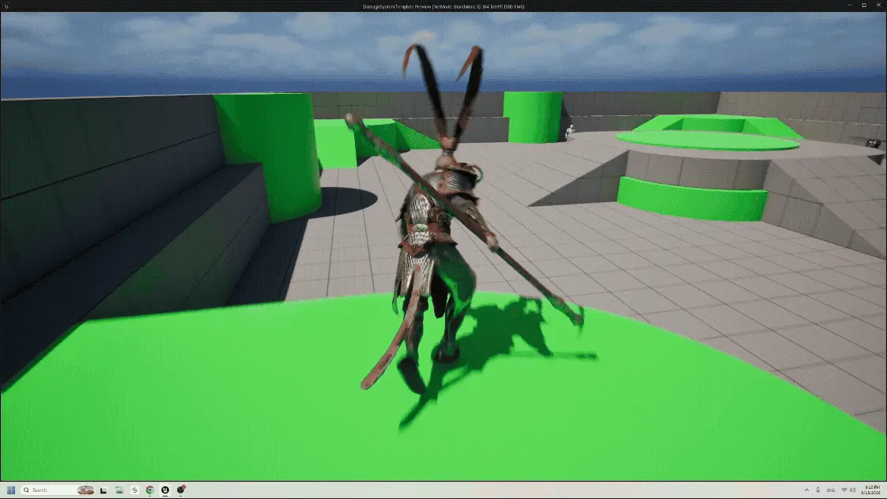
Jump attack is similar to the regular attack, but we check whether the character is falling to determine whether to use the jump attack animation.
Advanced Hitbox
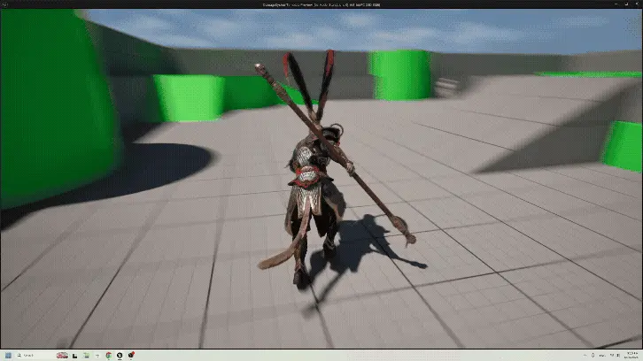
- For a simple hitbox, I created an Attack Profile struct containing information such as DamageAmount, Range, HitboxWidth, HitboxHeight, and HitableObjectTypes. I also added an Impact Frame Notify State to the Animation Montage and dynamically updated CanAttack boolean based on the Notify State. This is a per-attack hitbox.
- A more advanced approach is to implement bone-based hitbox using a separate Advanced Attack Profile with specific sockets. When an advanced attack is triggered, the hitbox start and end locations are dynamically retrieved from the socket locations on the character mesh.
Health Bar and Directional Hit
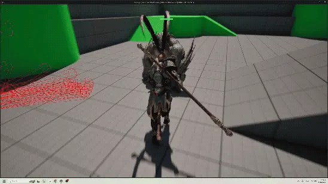
- Before making a functional health bar, I first set up the system for the attacker to deal damage and the receiver to take damage, using Any Damage for now. I created an ApplyDamageToHitActors function to keep the actual damage application modular. This makes it easier to change the Damage Type later without affecting the core attack logic. There is also additional implementation of a HitActors array to make sure each actor can only be damaged once per attack.
- For the health bar, I created a new material that combines different color layers of grey, red, and green using Lerp and Step nodes. I then displayed the health bar through a Widget Blueprint. To animate the health bar, I set up a Dynamic Material Instance in the Health System Component and updated scalar parameters such as FillLevel and HitLevel. Finally, I optimized the system by using Event Dispatcher instead of relying on the default Event Tick.
- For directional hit reactions, I used Point Damage to get the hit direction, then used a Map to select and play the corresponding hit reaction Animation Montage.
- For character ragdoll on death, we first assign a Physics Asset to the character’s skeleton. When the character dies, we enable physics simulation and physics collision, making sure the ragdoll properly interacts with the environment instead of falling through the ground.
Part 2:
This part contains more techniques to enhance the feel of the combat system. Implementation details awaiting update.
Hit Stop
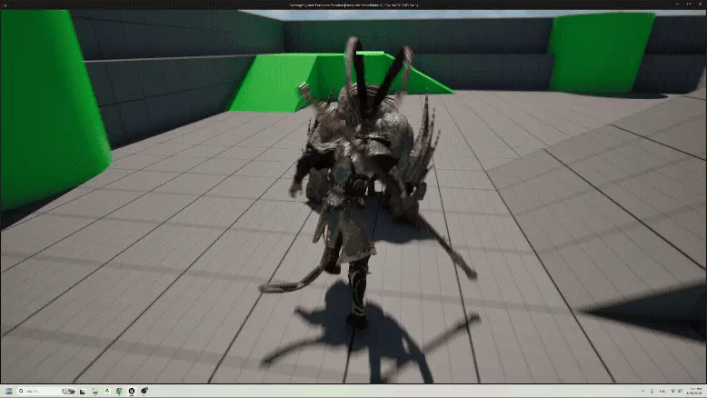
Hit Shake
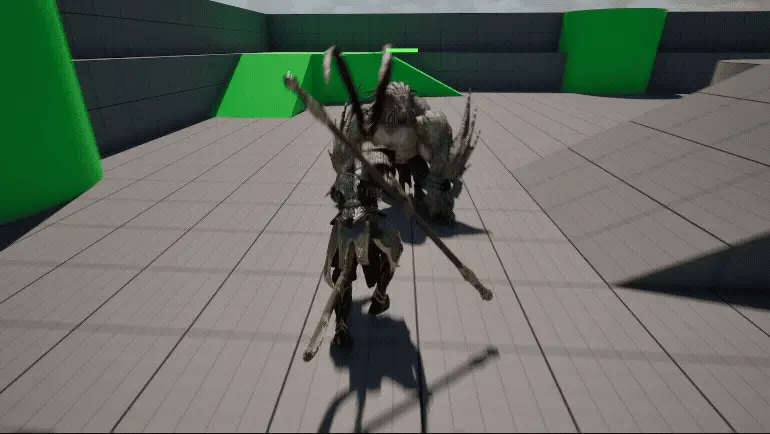
Camera Shake + Hit Flash
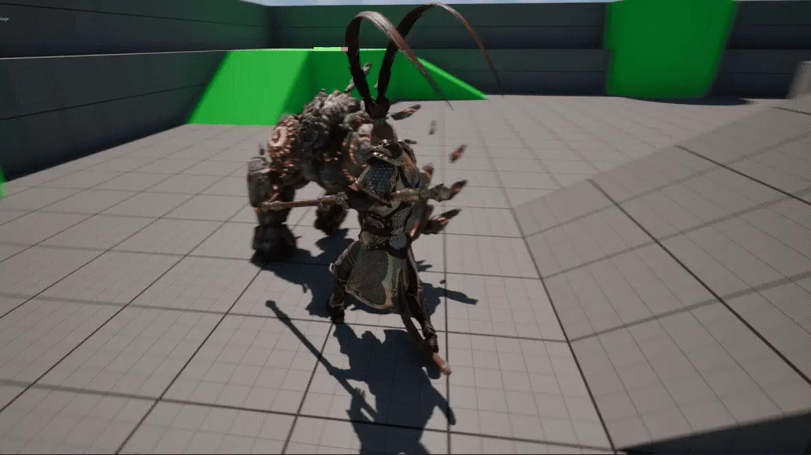
Hit Blood VFX
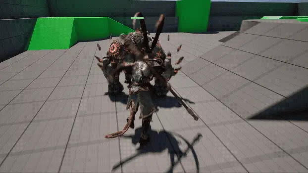
Optimized VFX with Stencil Render Pass
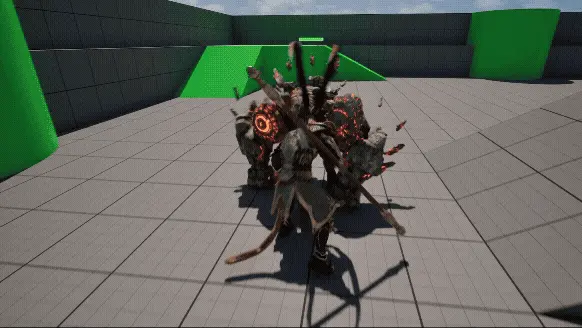